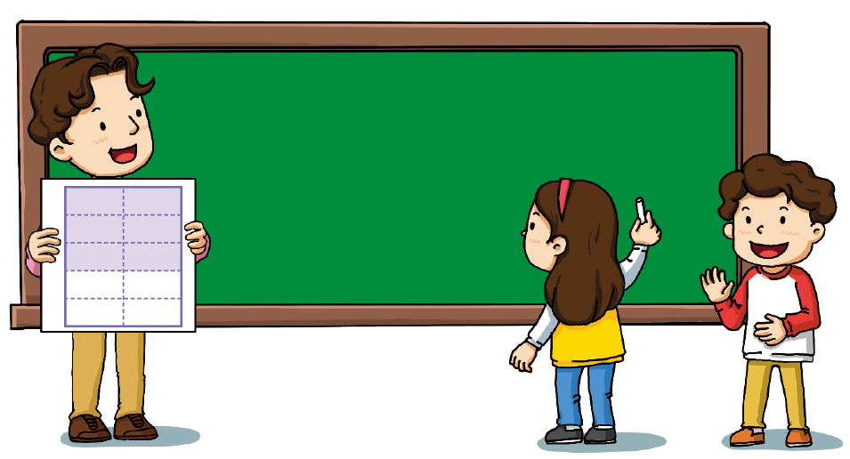
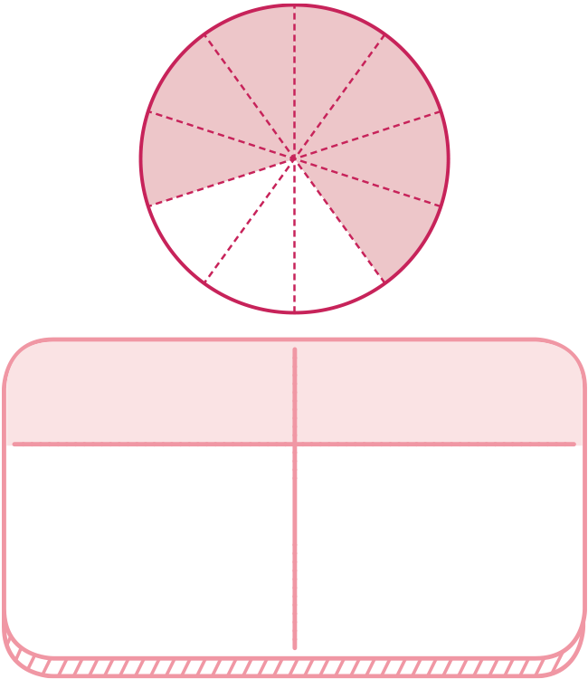
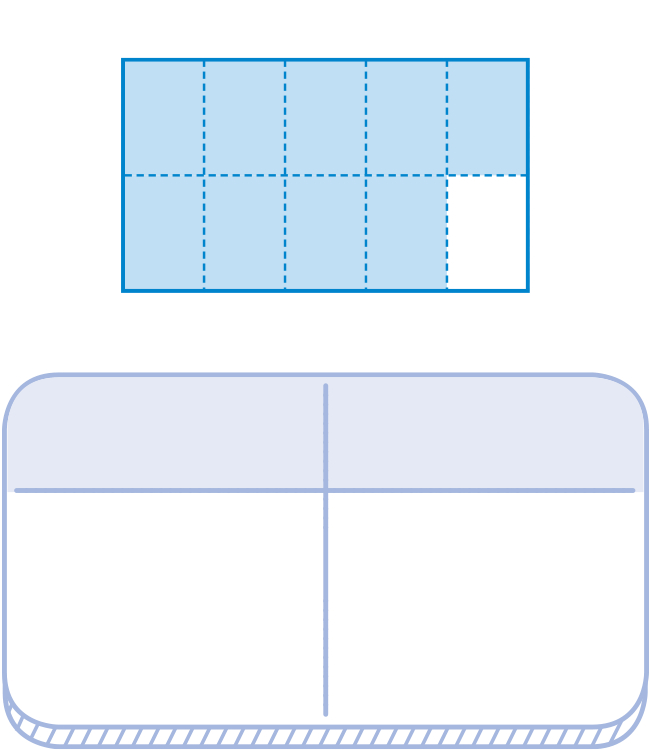
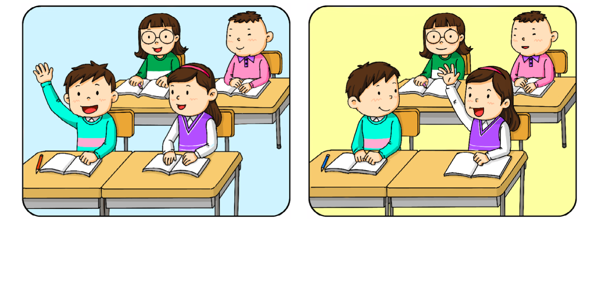

- 개념 정리
- 1
- 2
- 3
- 4
- 5
-
-
분수,
- 1
- 10
,- 2
- 10
…,- 3
- 10
를- 9
- 10
0.1,0.2,0.3, …,0.9라 쓰고영 점 일,영 점 이,영 점 삼, …,영 점 구라고 읽습니다. -
소수: 0.1, 0.2, 0.3과 같은 수소수점
-
-
1 그림을 보고 안에 알맞은 수나 말을 써넣으세요.
색칠한 부분을 소수로 나타내면
입니다.0.6이 소수를 읽으면
입니다.영 점 육 -
2 색칠한 부분을 분수와 소수로 나타내 보세요.
분수- 7
- 10
소수0.7분수- 9
- 10
소수0.9 -
3 안에 알맞은 소수를 써넣으세요.
0- 1
- 10
- 2
- 10
- 3
- 10
- 4
- 10
- 5
- 10
- 6
- 10
- 7
- 10
- 8
- 10
- 9
- 10
100.10.20.30.40.50.60.70.80.910.40.8 -
4 분수는 소수로, 소수는 분수로 나타내 보세요.
- 3
- 10
0.3- 5
- 10
0.50.1- 1
- 10
0.2- 2
- 10
-
5 우주와 샛별이가 설명하는 소수를 분수로 나타내 보세요.
0.1이 5개인
소수입니다.0.1이 3개인
소수입니다.우주샛별우주- 5
- 10
샛별- 3
- 10